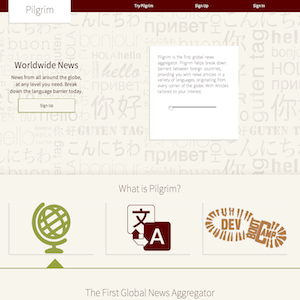

Benjamin Daniel Yorke
I've got more middle names, but I don't use them very often.
My Craft
- I'm a passionate coder. I code in Ruby and Javascript, using Rails and Node.js respectivly.
- I'm a meticulous designer. I care about the UI just as much as a care about the design of the code itself.
- I'm a veracious learner. I especially love to study topics that I'll never completely understand. The challenge excites me.
Technology
- I code in Ruby, Javascript, Rails, HTML, and CSS. I love to work in Node.js, C++, and Obj-C. I use vim.
- I test anything and everything. I have expirience with RSpec, Capybara, Shoulda-matchers, and Jasmine. I'm excited to learn cucumber as well.
- I have extensive expirience with GitHub, Heroku, CarrierWave, Amazon S3, OmniAuth, and OAuth.
Personal Projects
Pilgrim.io
Pilgrim is a global news aggregator that allows the user to slowly immerse themselves in any language.
Ruby, Rails, CoffeeScript, Handlebars, jQuery

HerokuFlow
HerokuFlow is a place to share our projects internally at Dev Bootcamp.
Ruby, SASS, CarrierWave, S3
Professional Experience
Dev Bootcamp [June 2013 - Current]- Assisted intruction of incoming boots
- Over 1000 hours of hands-on coding expirience.
- Group paired with Cohort to produce full scale web apps daily
- Visuals Lead responsible for maintaining all customer and employee facing equipement.
- Maintained ISU servers and devices, initiated a movement to optimize stores with ISU equipement.
- Helped open new Apple Stores around California. This entailed Store Assembly, ISU Device setup, and employee training.
Education
Dev Bootcamp - Web Developement- Student driven curriculum on Ruby on Rails, Emphasis on Test Driven Developement
- 100+ hours a week spend developing apps from with a CLI to full scale web apps.
- Special focus soft skills such as Collaboration, Feedback, and Communication
- Discovered Object Oriented Programming, by way of C++ and Obj-C.
- Attended the International Informational Display Conference for Solid State Physics.
- Persued a passion in Linguistic Anthropology, and the study of foreign languages themselves.
Contact
I want to work on a team of people who are as passionate as I am, who can challenge and inspire me everyday. If this sounds like your company, you can reach me at [myhandle]@gmail.com.References availiable upon request.